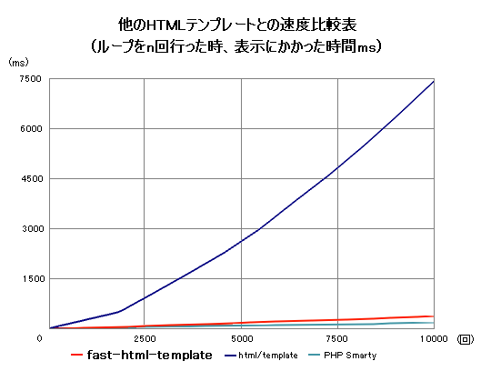

fast-html-template とは、CGI 等において、HTML をテンプレートとして扱うためのRubyモジュールです。HTML のテンプレートを作成する側は、プログラミングの知識を特に必要としないので、デザインとロジックの分離を容易に行うことができます。また、従来の HTML/Template と同じ使い方をすることができるため、 fast-html-template への移行を簡単に行うことができます。

(fast-html-template に含まれる looptest.rb, looptest.html を使用。)
fast-html-template のコンセプトは、名前にもある通りその速度にあります。 新しいアルゴリズムでコードが書いてあるため、 PHP にも引けを取らない高速な動作が期待できます。 繰り返し部分で特にその効果が発揮されます。
現在多く使われている HTML/Template と、ほぼ同様の使い方ができるため、 require しているファイルの名前を変えるだけで使用することができます。(一部例外あり)
さらに、いくつかの機能拡張を施してあるため、 HTML側からも CGI 側からも変更のできる、より自由で柔軟なコードを 簡単に書くことができます。
さらに詳細な情報は fast-heml-templateの使い方をごらんください。